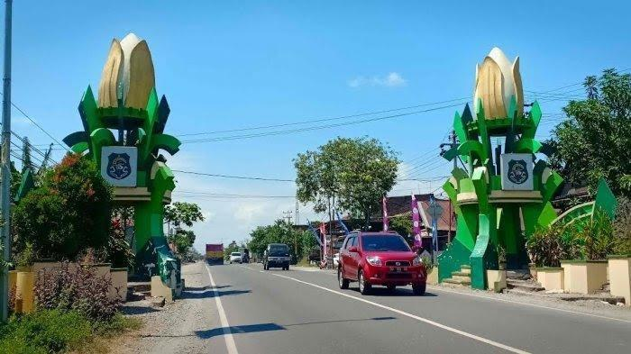
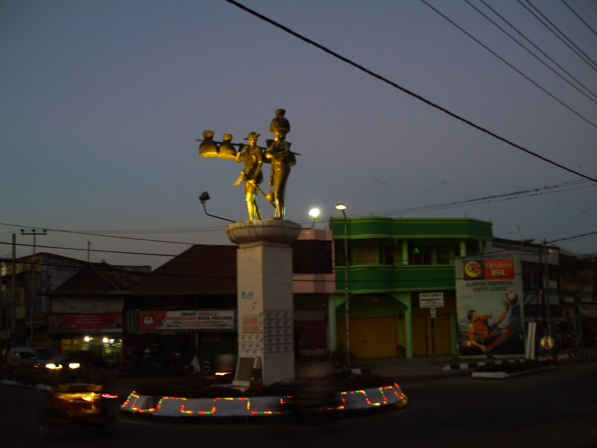
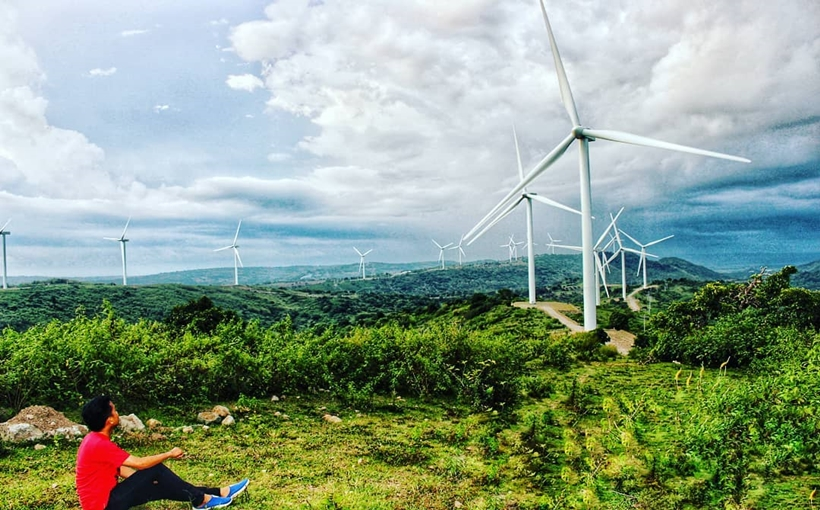

Sejarah

Berdasarkan Lontara’ Mula Ri Timpakenna Tana’e Ri Sidenreng, dikisahkan tentang seorang raja bernama
Sangalla. Ia adalah seorang raja di Tana Toraja. Konon, Sangalla memiliki sembilan orang anak yaitu
La Maddarammeng, La Wewanriru, La Togellipu, La Pasampoi, La Pakolongi, La Pababbari, La Panaungi,
La Mampasessu, dan La Mappatunru. Sebagai saudara sulung, La Maddaremmeng selalu menekan dan
mengintimidasi kedelapan adik-adiknya, bahkan daerah kerajaan adik-adiknya ia rampas semua. Karena
semua adiknya tidak tahan lagi dengan perlakuan kakaknya, mereka pun sepakat meninggalkan Tana
Toraja.
Geografi

Kabupaten Sidenreng Rappang terletak di diantara 30°43’ – 40°09’ Lintang Selatan dan 119°041’ –
120°010’ Bujur Timur. Kabupaten Sidenreng Rappang terletak pada ketinggian antara 10 m – 3.000 m
dari permukaan laut (Mdpl) dengan puncak tertinggi berada di Gunung Botto Tallu (3.086 Mdpl).
Keadaan Topografi wilayah di daerah ini sangat bervariasi berupa wilayah datar seluas 879.85 km²
(46.72%), berbukit seluas 290.17 km² (15.43%) dan bergunung seluas 712.81 km2 (37.85%). Wilayah
datar berada di bagian selatan dan barat. Wilayah perbukitan berada di bagian utara dan timur
terutama di Kecamatan Pitu Riawa dan Kecamatan Pitu Riase. Di wilayah dataran rendah terdapat dua
danau yaitu Danau Tempe dan Danau Sidenreng.
Wisata
Kincir Angin

kincir angin sidrap adalah tempat wisata baru yang ada di sidrap
Puncak Bila

kincir angin sidrap adalah tempat wisata baru yang ada di sidrap yang ada sepeda raksasa